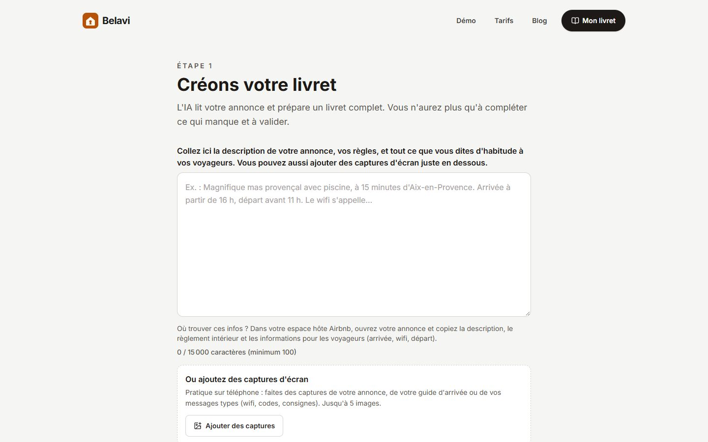

Comment j’ai construit un SaaS en 13 jours avec Claude Code
Je ne suis pas développeur. Pourtant, entre le 7 et le 20 octobre 2026, j’ai mis en ligne Belavi, un livret d’accueil digital généré par l’IA, avec comptes, paiement et pages légales. Voici la méthode, le journal de bord, et surtout ce que l’IA ne fait pas à ma place.
Le point de départ : un problème que je connaissais par cœur
Pendant trois ans, j’ai co-géré un logement sur Airbnb à Marseille. Je sais ce que c’est de répondre pour la dixième fois « c’est quoi le code du wifi ? », souvent tard le soir. Les livrets papier ou PDF ne règlent pas grand-chose : ils sont vite obsolètes, peu lisibles sur un téléphone et rarement traduits.
L’idée de Belavi est simple : l’hôte colle le texte de son annonce, l’IA rédige un livret complet, et le voyageur le consulte sur son téléphone grâce à un QR code. Des outils existent déjà, mais souvent en anglais et en demandant de tout saisir à la main. Mon angle : partir de ce que l’hôte a déjà écrit, en français, pour des gens qui ne sont pas techniques.
D’abord cadrer, ensuite coder
Avant la première ligne de code, j’ai passé du temps sur ce que je sais faire : le marketing. Avec Claude comme partenaire de réflexion, j’ai écrit un brief complet : le problème, les cibles (les conciergeries d’abord, les hôtes indépendants ensuite), la concurrence, la promesse et une première hypothèse de prix.
Ce brief est devenu un fichier de contexte que Claude Code relit à chaque session, avec quelques règles non négociables :
- L’IA n’invente jamais une information pratique : un code, un horaire ou un numéro absent de l’annonce reste vide et apparaît dans une liste « à compléter ».
- La clé de l’API reste côté serveur, jamais dans le code visible par le navigateur.
- Le contenu du livret et son apparence sont séparés : changer de thème ne touche jamais au texte.
- Tout est d’abord en français et pensé pour le mobile (depuis, le livret se lit aussi en anglais, espagnol, italien et allemand).
Enfin, j’ai découpé la première version en six phases, avec une règle : une phase à la fois, un test sur mon écran, puis ma validation avant de passer à la suivante. C’est exactement ce qu’on apprend en gestion de projet ; la différence, c’est que l’équipe de développement était une IA.
Le journal de bord, jour par jour
Les dates viennent de l’historique du code : rien n’est arrondi. Ce journal raconte les 13 premiers jours ; pour l’état actuel du produit (cinq langues, tarifs conciergeries, démo vidéo), voir la fiche Belavi.
- 7 octobre — création du projet, fondations et première page voyageur (thème Provence).
- 9 octobre — les deux autres thèmes, l’éditeur avec aperçu en direct, la génération par l’IA et la page d’accueil. Le prototype complet existe.
- 11 octobre — changement de modèle économique (essai gratuit de 30 jours) et première mise en ligne.
- 17 octobre — le projet devient Belavi : nouveau nom, nom de domaine, page Tarifs, et une limite de générations pour protéger le budget.
- 18 octobre — comptes et publication des livrets, envoi de photos, import par captures d’écran, pages légales et paiement en mode test.
- 20 octobre — paiement réel activé, conditions générales de vente, référencement, blog, livret en anglais et lecture sans réseau.
Treize jours entre le premier commit et un produit capable d’encaisser un abonnement. Ce n’est pas une course : c’est surtout la preuve qu’un profil marketing peut aujourd’hui tester une idée en vrai, au lieu de la laisser dans une présentation.

Ce que fait Claude Code, et ce qu’il ne fait pas
Claude Code écrit le code, l’explique et corrige ses erreurs. À chaque étape, je lui demandais de m’expliquer simplement ce qu’il faisait et pourquoi, et de me donner les commandes une par une. J’ai appris plus de technique en deux semaines qu’en lisant des tutoriels.
Mais l’IA ne décide de rien. C’est moi qui ai choisi la cible, le prix, le nom, ce qu’on affiche en premier sur un téléphone, et ce qu’on refuse de laisser faire à la machine. C’est moi aussi qui testais chaque écran, repérais ce qui n’allait pas et demandais de recommencer. Le « vibe-coding » n’est pas magique : c’est du pilotage de projet, avec un développeur très rapide qui a besoin d’un cap très clair.
Ce que le code ne règle pas
La partie la plus formatrice n’a pas été technique. Vendre un abonnement en ligne, c’est aussi :
- Le droit : mentions légales, politique de confidentialité, conditions d’utilisation et conditions générales de vente.
- Les coûts : j’ai mesuré le prix d’une génération (environ un centime), calculé les frais fixes et le nombre d’abonnés nécessaires pour être rentable, et posé des garde-fous sur la facture IA : au lancement, des crédits prépayés sans recharge automatique ; depuis le 10 novembre, une recharge automatique plafonnée et une limite mensuelle de dépenses.
- La confiance : données hébergées en Europe, liens de livret impossibles à deviner, paiement sécurisé.
Pour prendre du recul, j’ai fait réaliser un audit complet du site : technique, référencement, accessibilité, sécurité, légal et conversion. Résultat : une base technique solide, et une liste claire de ce qui reste à améliorer, surtout côté conversion et obligations légales.
Ce que ça change pour mon métier
Je suis en Mastère Transformation Digitale & IA en Stratégie Marketing, et Belavi est probablement le meilleur exercice que je pouvais me donner. J’en retiens trois choses :
- Un profil marketing qui sait prototyper peut tester une idée en quelques jours au lieu de la défendre en réunion.
- Comprendre comment un produit est construit rend plus pertinent face à une équipe technique : on sait ce qui est simple, ce qui coûte cher, et quoi demander.
- L’IA ne remplace pas le jugement : elle déplace la valeur vers le cadrage, les décisions et la qualité des consignes.
C’est cette façon de travailler que je veux apporter dans l’entreprise qui m’accueillera en stage ou en alternance en 2026-2027.
La suite
Le produit est en ligne et prêt à encaisser. La prochaine étape est commerciale : faire tester Belavi à des hôtes et convaincre les premières conciergeries. Je partagerai ici ce que j’apprends, y compris ce qui ne marche pas.